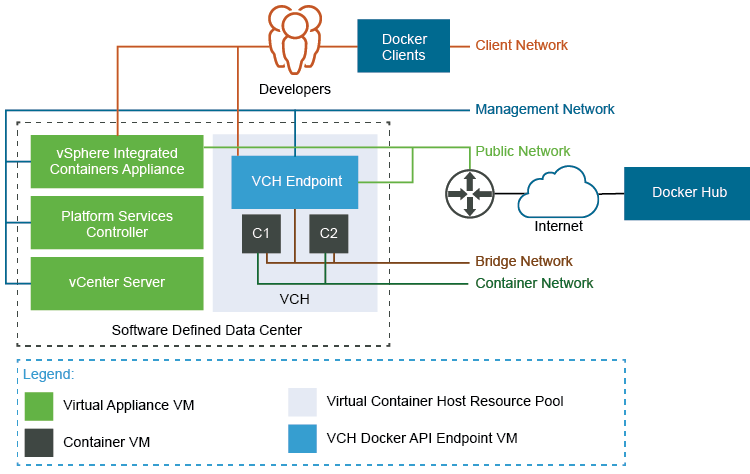
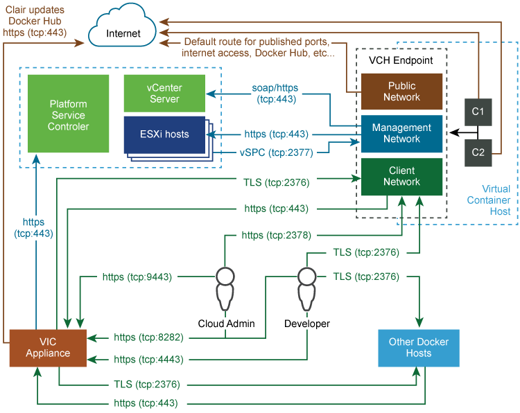

Virtual Container Host Networks
You can configure networks on a virtual container host (VCH) that tie your Docker development environment into the vSphere infrastructure. You define which networks are available to a VCH when you use vic-machine create to deploy the VCH.
- High-Level View of VCH Networking
- Understanding Docker and VCH Networking
- VCH Networks
- Networking Limitations
- Host Firewall Configuration
High-Level View of VCH Networking
The image below shows how VCH networks connect to your vSphere environment, to vSphere Integrated Containers Registry and Management Portal, and to public registries, such as Docker Hub.

Ports and Protocols
The image below shows detailed information how different entities that are part of a vSphere Integrated Containers environment communicate with each other.

Understanding Docker and VCH Networking
To understand how you can configure networks on VCHs, you first must understand how networking works in Docker.
For an overview of Docker networking in general, and an overview of networking with vSphere Integrated Containers in particular, watch the Docker Networking Options and vSphere Integrated Containers Networking Overview videos on the VMware Cloud-Native YouTube Channel:
See also Docker container networking in the Docker documentation.
VCH Networks
You can direct traffic between containers, the VCH, the external Internet, and your vSphere environment to different networks. Each network that a VCH uses is a distributed port group or an NSX logical switch on either a vCenter Server instance or an ESXi host. You must create port groups or logical switches in vSphere before you deploy a VCH.
IMPORTANT: All hosts in a cluster should be attached to the port groups that you use for the VCH networks and for any mapped container networks.
For general information VCH networking requirements and how to create a distributed virtual switch and port group, see Networking Requirements for VCH Deployment.
- Bridge Networks: In Docker terminology, the VCH bridge network corresponds to the default bridge network on a Docker host. You can also create additional bridge networks, that correspond to Docker user-defined networks. You must create a dedicated port group for the bridge network for every VCH. For information about VCH bridge networks, see Configure Bridge Networks.
- Public Network: The network that container VMs and VCHs use to access the Internet. If you use the Create Virtual Container Host Wizard, you must create a port group for the public network. You cannot use the same port group for the public network as you use for the bridge network. However, you can use the public network port group for the client and management networks. For information about VCH public networks, see Configure the Public Network.
- Client Network: You can isolate traffic between Docker clients and the VCH from traffic on the public network by specifying a dedicated network for client connections. For information about VCH client networks, see Configure the Client Network.
- Management Network: You can also isolate the traffic between the VCH and vCenter Server and ESXi hosts from traffic on the public network by specifying a dedicated management network. For information about VCH management networks, see Configure the Management Network.
- Container Networks: User-defined networks that you can use to connect container VMs directly to a routable network. Container networks allow vSphere administrators to make vSphere networks directly available to containers. Container networks are specific to vSphere Integrated Containers and have no equivalent in regular Docker, and provide distinct advantages over using Docker user-defined networks. For information about container networks, including their advantages over Docker user-defined networks, see Configure Container Networks.
You can configure static IP addresses for the VCH on the different networks, and configure VCHs to use proxy servers. For information proxy servers, see Configure VCHs to Use Proxy Servers.
Networking Limitations
In previous releases of vSphere Integrated Containers, VCHs supported a maximum of 3 distinct network interfaces. Due to this limitation, at least two of the public, client, and management networks had to share a network interface and therefore a port group. This limitation has been removed in this release and you can specify a separate network interface for each of the bridge, public, client, management, and container networks.
Host Firewall Configuration
When you specify different network interfaces for the different types of traffic, vic-machine create checks that the firewalls on the ESXi hosts allow connections to port 2377 from those networks. If access to port 2377 on one or more ESXi hosts is subject to IP address restrictions, and if those restrictions block access to the network interfaces that you specify, vic-machine create fails with a firewall configuration error:
Firewall configuration incorrect due to allowed IP restrictions on hosts: "/ha-datacenter/host/localhost.localdomain/localhost.localdomain" Firewall must permit dst 2377/tcp outbound to the VCH management interface
For information about how to open port 2377, see Open the Required Ports on ESXi Hosts.